San Jorge es un mártir cristiano que curiosamente es de los pocos santos que es venerado entre católicos, ortodoxos, anglicanos y musulmanes.
Pero eso no es lo más interesante. A nivel propaganda es aún más fascinante. Os lo cuento con estas fotos, que tienen mucho que ver🧵:

Lo del dragón lo dejamos para más adelante, pero antes resumen rápido de su historia:
Jorge era un soldado romano criado en Palestina que murió ejecutado por el emperador Diocleciano por ser cristiano un 23 de abril del 303, aprox. Historia típica de mártir sin mucha fantasía. 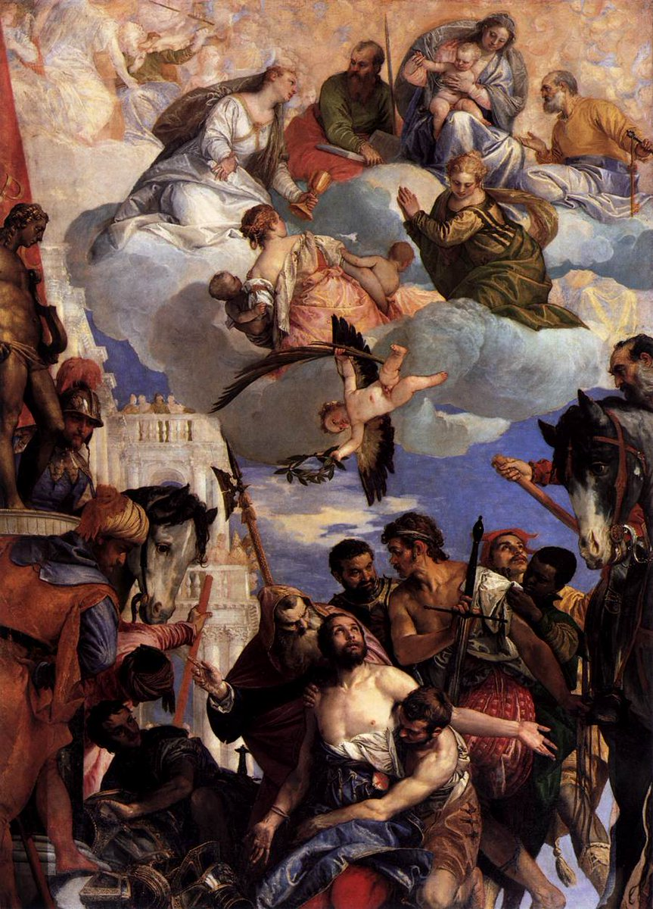
La fantasía del dragón es una leyenda que surgió en la Edad Media, donde el tema de los caballeros, los dragones y las princesas estaba a la orden del dia.
Un dragón se pone delante de una fuente de un pueblo. Para sacar agua, los habitantes le daban diariamente dos ovejas para que se apartara. Llegó un momento en el que le ofrecieron sacrificios humanos. Y entre esos sacrificios, un día resultó agraciada la princesa del lugar. 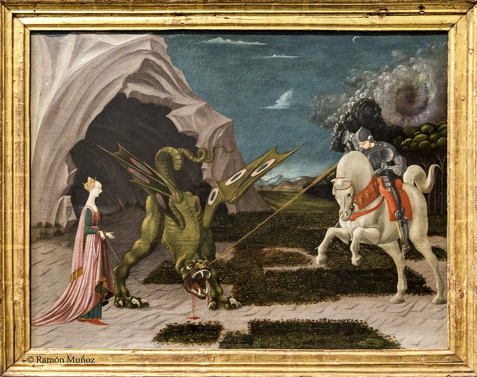
El resto, pues resumiendo: llega San Jorge, le mata con una lanza y salva a la princesa y todos felices.
A cambio, como agradecimiento, pide a todos los habitantes del pueblo que se bauticen. Es lo que se representa en la mayoría de cuadros. 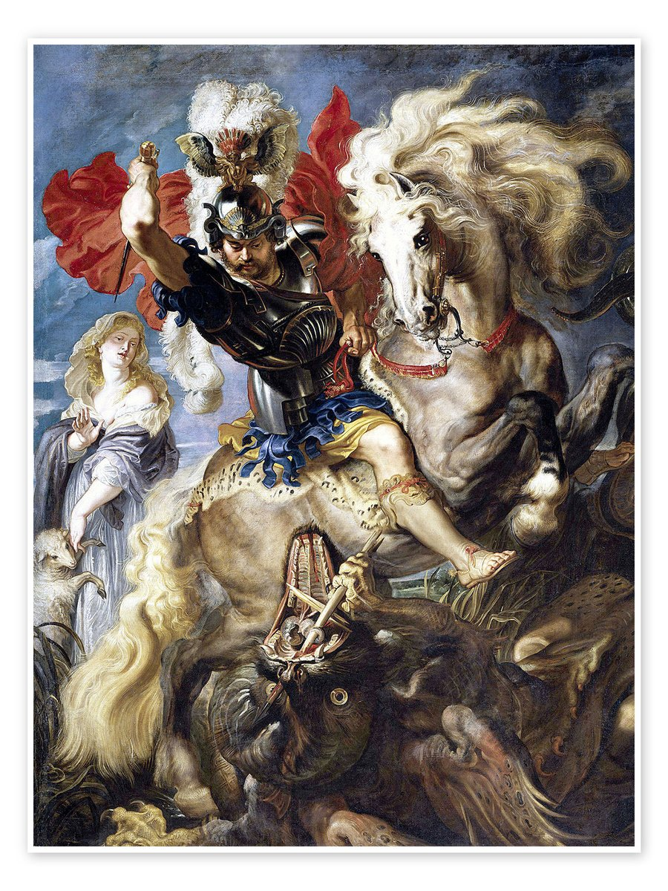
Esta historia se parece mucho al mito de Perseo y, de hecho, a nivel literatura, es la base de muchísimas historias medievales. Mi reinterpretación favorita, por supuesto, es esta:


Y esta historia/leyenda, ¿dónde ocurrió? ¿En Aragón, en Cataluña, en Cáceres, en Rusia? Pues no.
Se estima que "pudo" ser en Beirut (Líbano). De hecho, ¿cuál es el patrón de Beirut? Efectivamente: San Jorge.
Esta es la catedral de San Jorge en Beirut. 

(Pequeño recordatorio: no todos los países árabes son musulmanes al 100%. Líbano o Siria son ejemplo de ellos. Los que me seguís ya lo sabéis, que soy muy pesada con esto).
Ya conocemos la historia y la leyenda. Ahora vamos con la propaganda y, para ello, vamos a centrarnos en cuatro territorios muy diferentes del mundo: España, Inglaterra, Palestina y Rusia.
A nivel propaganda es una imagen potentísima, porque tenemos un héroe y enemigo vencido que es un monstruo.
Si hablamos de teoría: principio de transfusión de Goebbels y "nuestra causa tiene carácter divino", de Ponsoby. También el de "el enemigo tiene el rostro del demonio" ✍🏼 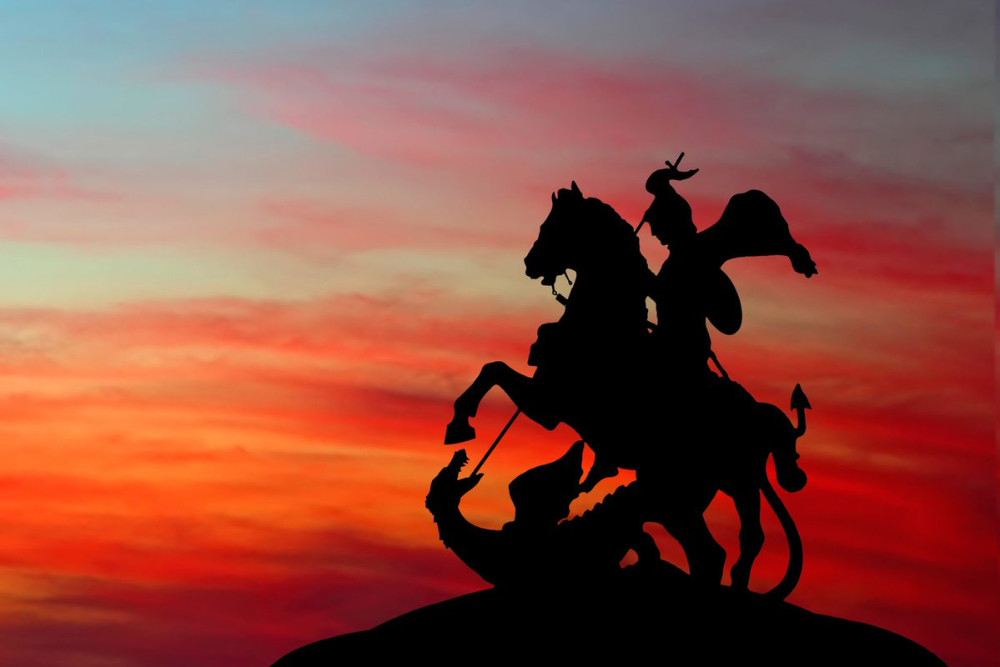
🇪🇦
San Jorge es patrón de varios lugares en España. Entre ellos: Aragón, Cataluña y Cáceres.
La vinculación del santo con estos territorios es completamente bélica y tiene que ver con la ayuda divina que les brindó en varias batallas durante la reconquista.

Cuando hablamos de Aragón y Cataluña, hablo del Reino de Aragón, porque nos estamos remontando a la Edad Media.
(No vengáis a dar la turra aquí ahora con el independentismo, por favor, que os veo venir 🙏🏼).
Fijaos en el dragón del escudo 👀. 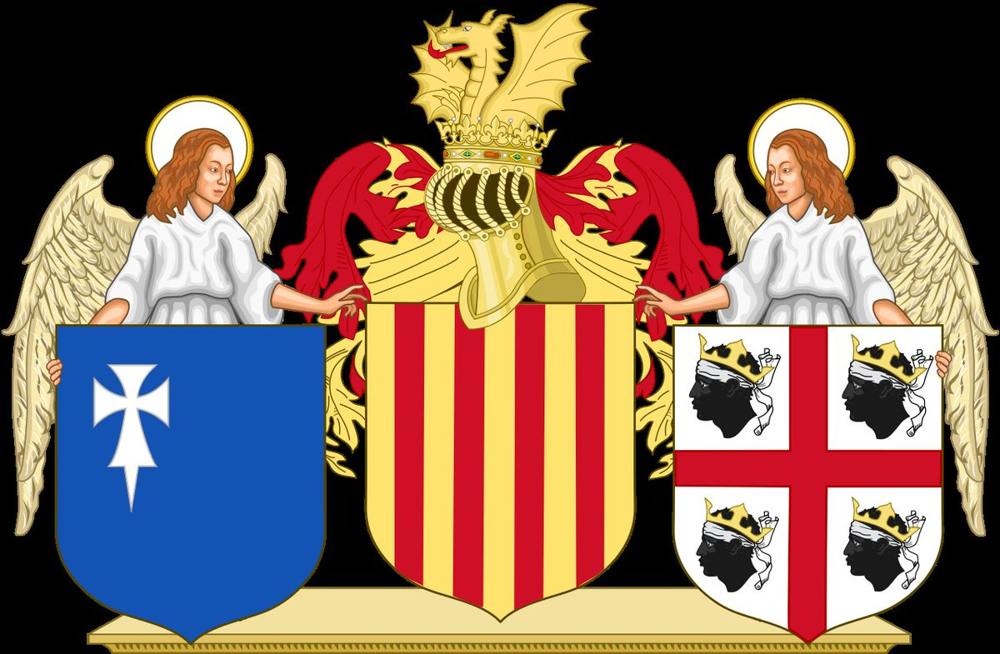
No quiero extenderme mucho, pero básicamente San Jorge ayudó a los cristianos a ganar la batalla de Alcoraz (Huesca) contra los musulmanes. Este tipo de historia con santos no son nuevas. Ya os hablé de otra aquí:
No me da para contarla aquí, pero sí que os recomiendo que busquéis cómo cambia la historia en Cáceres. La base es la misma (una batalla contra los musulmanes), pero aquí hay una princesa que se convierte en gallina.
Viva Cáceres 💚🤍🖤. 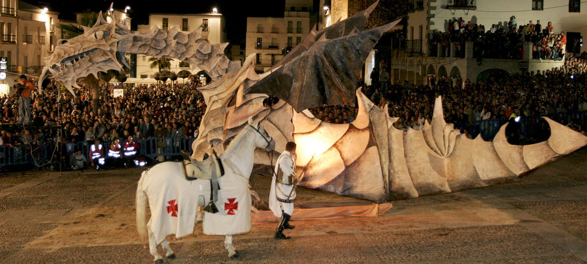
Básicamente San Jorge se convirtió en un símbolo de la llamada reconquista, cuyo propio nombre es propagandístico en sí.
De hecho, las fiestas de Moros y Cristianos de la Comunidad Valenciana se celebran precisamente el día de San Jorge, por todo esto.
Esto es Alcoy.
🇬🇧
La bandera de UK es la suma de la de todos los territorios que forman Reino Unido. Y, ¿qué cruz lleva la bandera de Inglaterra? ¿No será la de San Jorge? 

Pequeño paréntesis:
¿No se parece un poco a esta otra? Igual tiene que ver con que Cerdeña fuera parte, precisamente, del Reino de Aragón 🫡🤌🏼.
Los señores estos son las famosas "cabezas de m0ros cortadas". Se llama así, no lo digo yo. 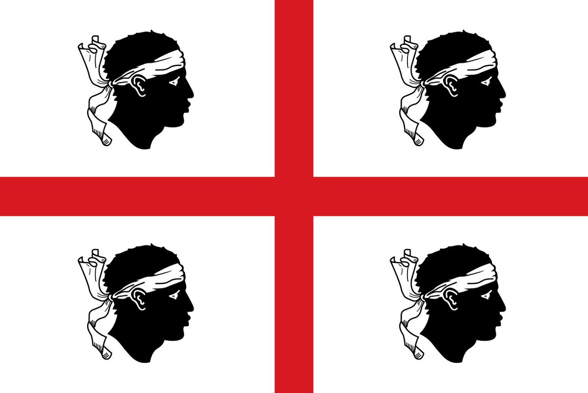
Otro paréntesis para los futboleros:
El Huesca, el Génova, el Milán, el Inter, el escudo del Barça... Veo cositas en común, ¿no?
(Cómo me gustaba Zlatan, me cago en mi vida).

{kind=link}
{kind=link}
{kind=link}
{kind=link}
{kind=link}
{kind=link}
{kind=link}
{kind=link}
{kind=link}
{kind=link}
{kind=link}
{kind=link}
{kind=link}
{kind=link}
La historia de la Cruz de San Jorge es la historia de las cruzadas. El término 'cruzadas' viene precisamente de que los soldados cristianos se pintaban o cosían cruces en estandartes y uniformes para distinguirse. Y una de esas cruces era:
{kind=link}
{kind=link}
{kind=link}
St. George es el patrón de Inglaterra también. Y la rosa es porque de la sangre del dragón se dice que salió una rosa que regaló a la princesa. Además, es la flor nacional de Inglaterra.
{kind=link}
{kind=link}
{kind=link}
Efectivamente, San Jorge es el patrón de Moscú y uno de los santos más importantes en la religión ortodoxa.
Tan importante es que se celebra dos días: el 23 de abril (día de su muerte) y el 6 de mayo (día de su nacimiento). También en noviembre se celebra. 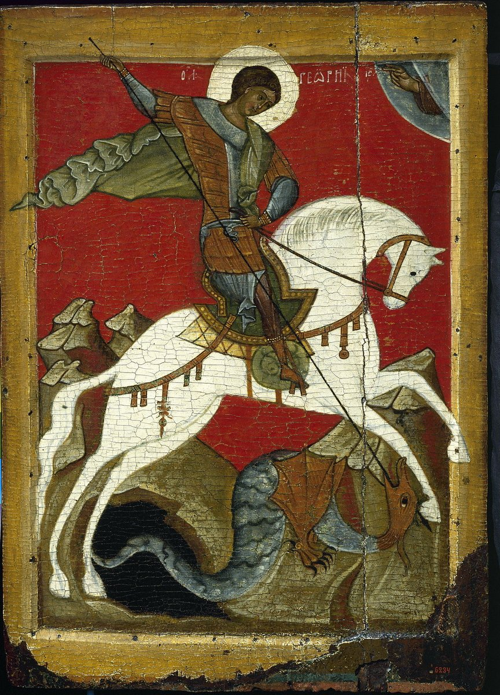
{kind=link}
El culto a San Jorge llega a Rusia de la mano del rey Yaroslav I el Sabio, el cual tuvo un papel fundamental en la historia de Kiev, que no me da para contarlo aquí.
En las imágenes, sale siempre con la catedral de Santa Sofía de Kiev en brazos. Búscatelo.
{kind=link}
{kind=link}
Volviendo a lo nuestro, dato que no es necesario, pero que es curioso. En Ruso, Jorge = Yuri.
{kind=link}
En Rusia, San Jorge traspasa lo espiritual. Es uno de los símbolos nacionales patrióticos. Y para entender esto, tenéis que conocer la 'Orden imperial y militar de San Jorge, mártir y victorioso'. 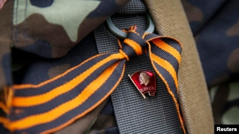
{kind=link}
Catalina II La Grande, emperatriz de Rusia, creó en 1769 un galardón militar con el que condecorar el honor de los soldados: la Orden de San Jorge.
Aquí la tenéis, condecorada ella, por ella misma: 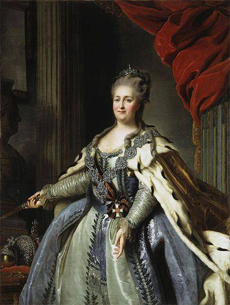
{kind=link}
Salvo un parón en el que Lenin la quitó, esta condecoración se ha seguido otorgando en Rusia. De hecho, es el máximo honor que puedes recibir en este país. Y hoy en día es uno de los símbolos nacionales. 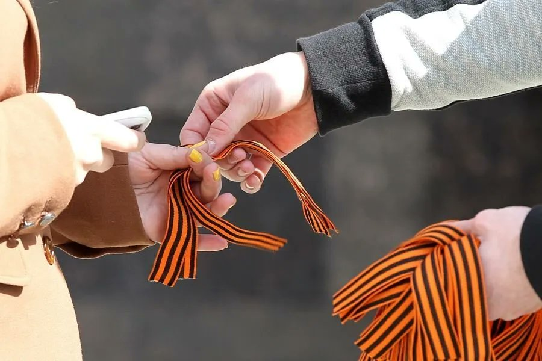
{kind=link}
Naranja y rojo.
Dos teorías:
1. Humo y fuego
{kind=link}
{kind=link}
{kind=link}
La cinta de San Jorge sigue siendo un símbolo ruso que hoy se usa como apoyo a Rusia en todo el tema bélico y político en el que estamos inmersos.
De hecho, yo tengo un trocito de ella que llevo siempre encima. (Gracias Nico, este gesto te honra). 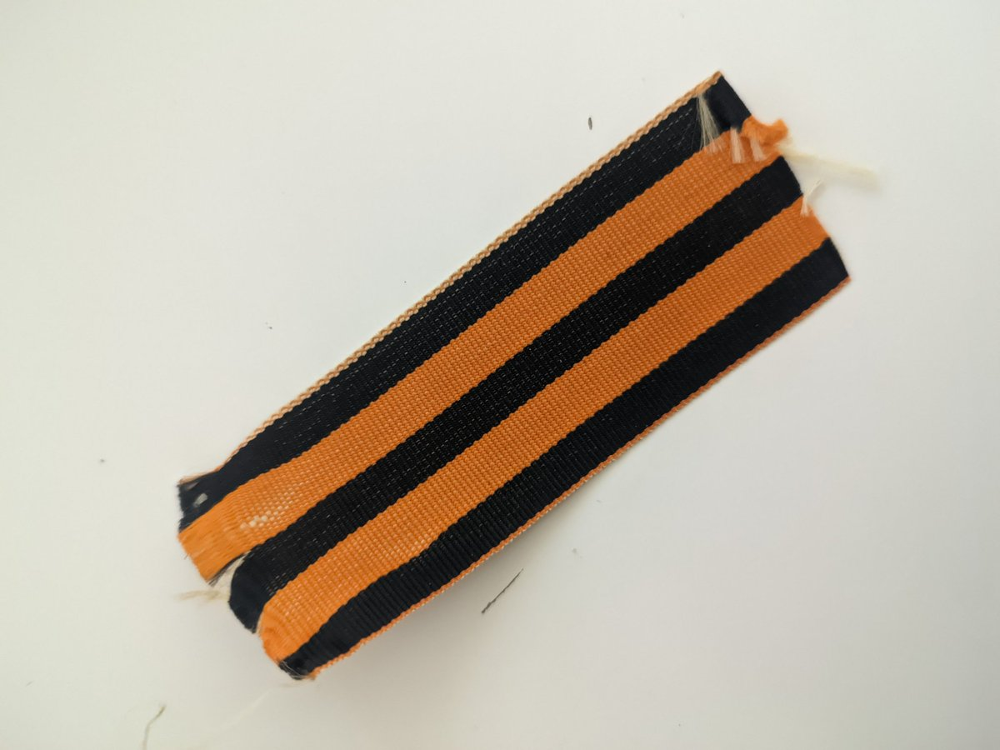
{kind=link}
Aquí otro ejemplo, con marca de agua porque soy así de cutre. 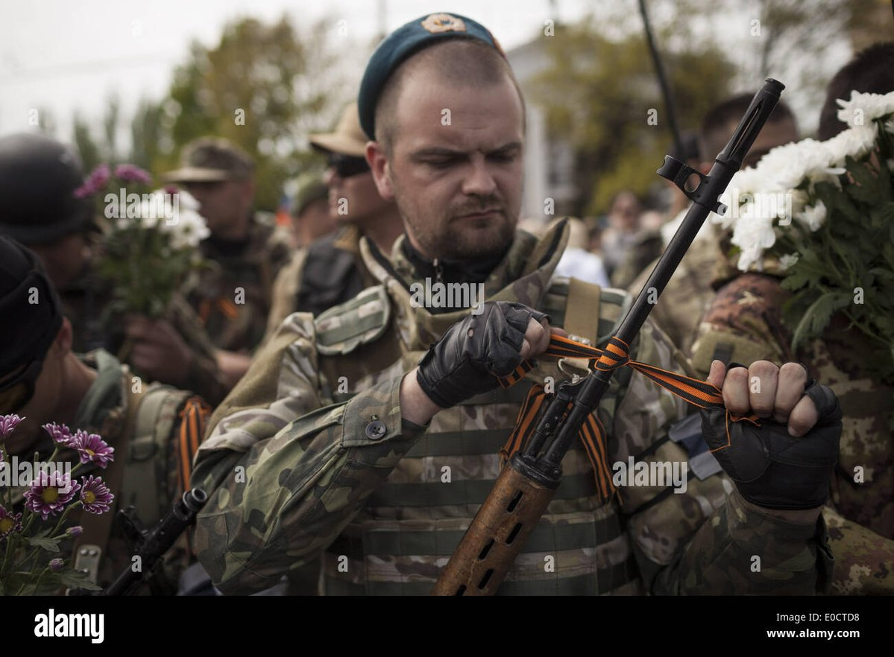
{kind=link}
{kind=link}
{kind=link}
{kind=link}
Y siguiendo con la propaganda y la importancia de la escenificación en ella: ¿A qué no sabéis dónde firmó Vladimir Putin la anexión de Crimea?
En la Sala de San Jorge del Kremlin.
{kind=link}
{kind=link}
{kind=link}
🇵🇸
En Palestina, el santo es conocido de dos maneras: Mar Jiryes (para cristianos) y Al-Khader (para musulmanes). El 6 de mayo se celebra una especie de romería en su honor. De hecho, mirad qué pasada el Monasterio de San Jorge de Palestina. 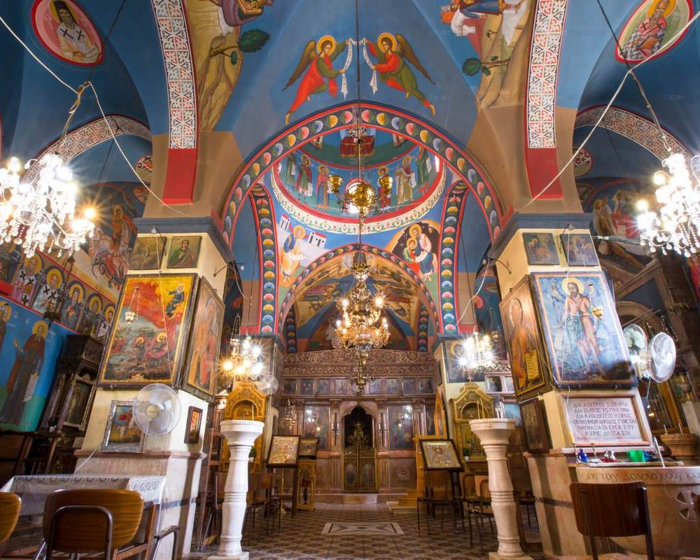
{kind=link}
En el Islam, también se venera a San Jorge pues es reconocido como un profeta, como Jesucristo. Se le conoce como Khidr, que traducido es 'El hombre verde'. Una historia que no me da tiempo a explicar, pero que tiene que ver con un sirviente de Moisés. 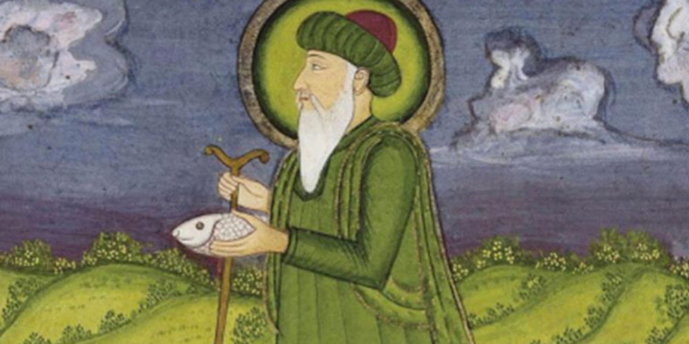
{kind=link}